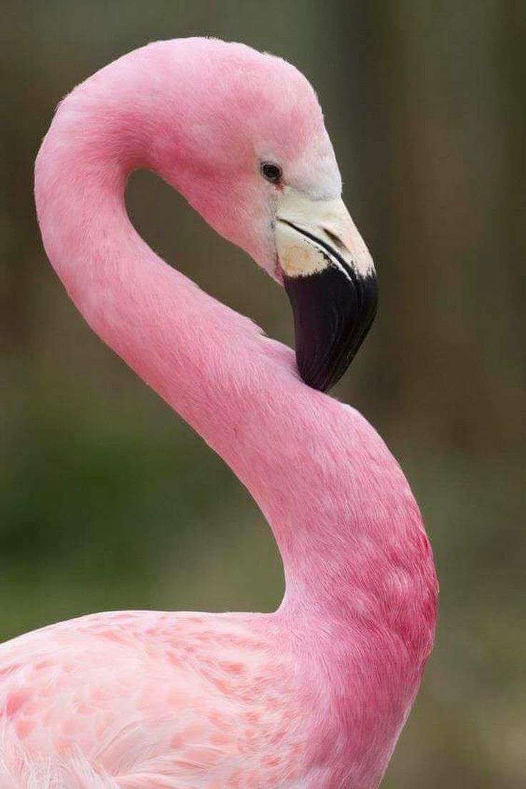
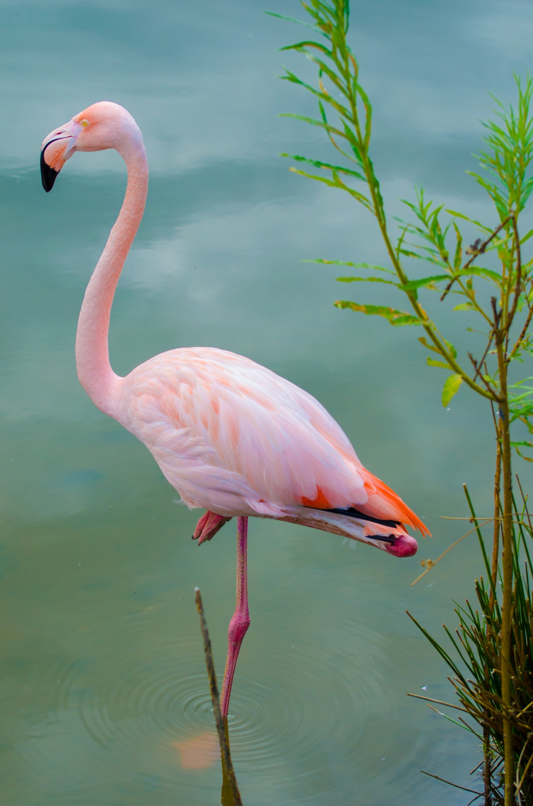

Розовый фламинго
The body length of the pink flamingo is 120-145 cm, weight 2.1-4.1 kg, wingspan-140-165 cm. Together with the closely related red flamingo (Phoenicopterus ruber), pink is the largest member of the family. The encyclopedia of Animal Life shows a body length of 130 cm and a weight of 3.4—4 kg. According to other sources, the" height " of the pink flamingo is 110-150 cm, the wingspan is 140-170 cm, and the weight is 2-4 kg. These are the largest members of the family: the record for "growth" belongs to the pink flamingo with a height of 187 cm. Female pink flamingos are 20% smaller than males, in particular, their legs are shorter.


Why are flamingos pink?
The pink or red color of the flamingo's plumage is given by coloring substances obtained from food. In case of danger, the birds fly up in a flock, and it is difficult for the predator to choose a particular victim from them, especially since the flight feathers on the wings are always black and when flying, they prevent you from focusing your eyes on the victim.
Their pink color comes from small red crustaceans, which contain carotenoid.